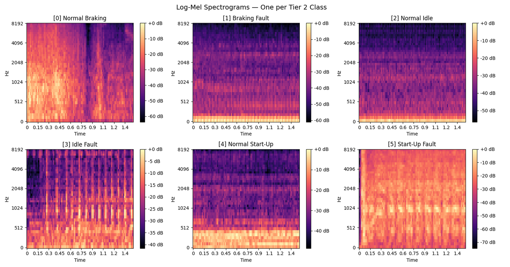
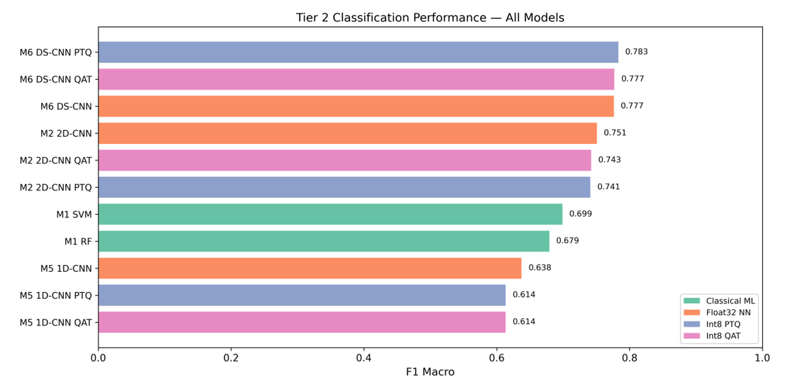
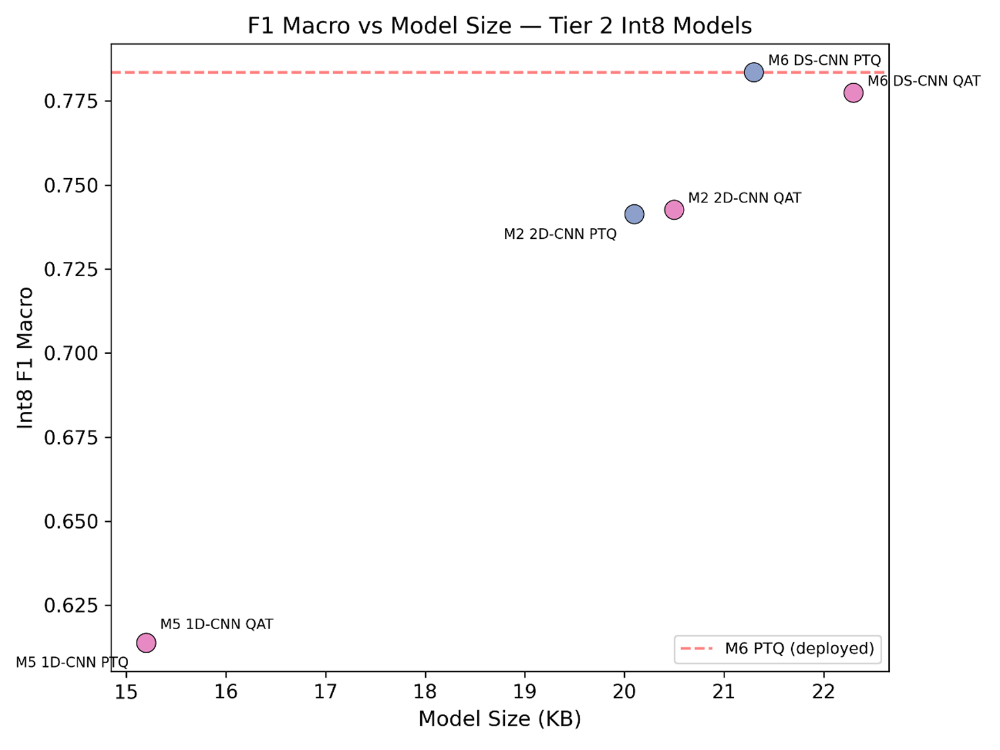
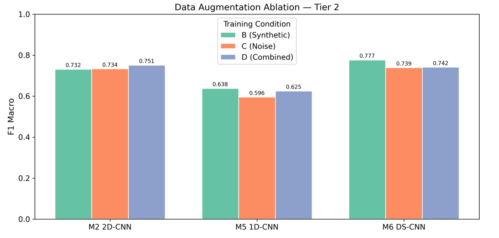
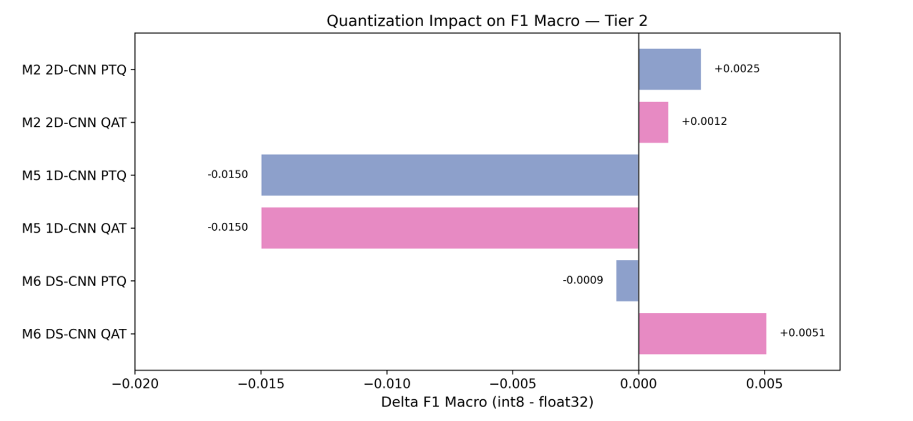
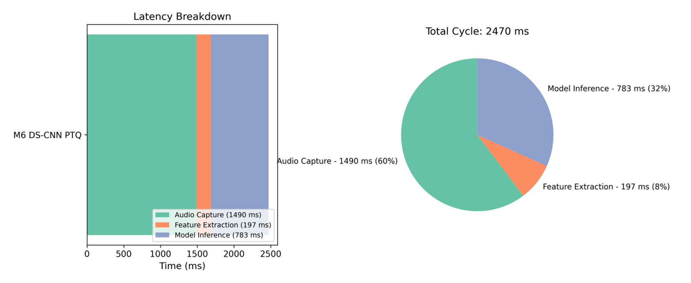
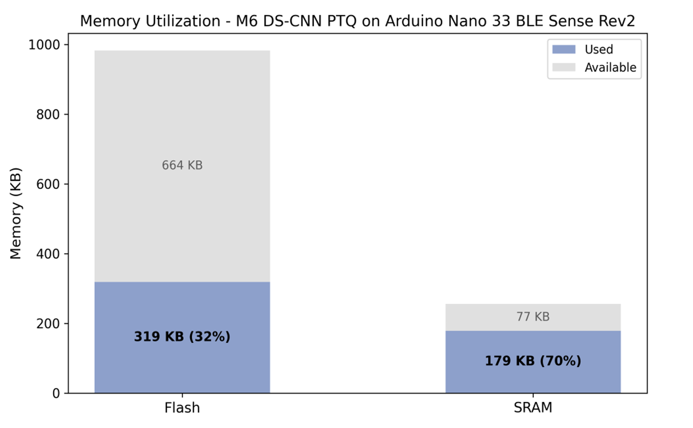

Car Sounds — On-Device Fault Diagnosis
On-device automotive fault diagnosis from engine audio.
The problem
Automotive faults often announce themselves in sound long before a dashboard light. Diagnosing them on-device — with no cloud, no connectivity, and a microcontroller's memory budget — means a model that is both accurate and tiny.
What I built
I designed a depthwise-separable convolutional neural network (DS-CNN) that classifies automotive faults from engine and vehicle audio using mel-spectrogram features. I applied post-training quantization and deployed the model to an Arduino Nano 33 BLE Sense Rev2, demonstrating sub-second inference on edge hardware.


Architecture
audio → Log-mel
spectrogram → DS-CNN +
quantization → On-device
inference (Arduino)
Audio is captured on-device, transformed into log-mel-spectrograms, classified by the DS-CNN, and the model is post-training-quantized to fit within the microcontroller's tight memory and compute budget.
Highlights
- Depthwise-separable CNN classifies faults from mel-spectrogram audio features.
- Post-training quantization shrinks the model to fit a microcontroller with minimal accuracy loss.
- Deployed to an Arduino Nano 33 BLE Sense Rev2 with sub-second on-device inference.
- Profiled accuracy, latency, and memory trade-offs across model variants.

Results
A two-phase evaluation profiled model variants across accuracy, size, latency, and on-device resource use — selecting the M6 DS-CNN for deployment on the basis of macro-F1 score.





Tech stack
Read the full report
The complete methodology, experiments, and results are documented in the project's final report.